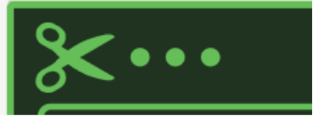

Portfolio Opgave
Tema 5
Virksomheds Website
Teknologier og Værktøjer
- Lottie Files
- Figma, Adobe Illustrator & Photoshop
- Git og GitHub
Lottie-files : Vi blev introduceret til LottieFiles som en måde at tilføje letvægtsanimationer til websites. Jeg lærte at bruge After-Effects og at integrere lottie-files i HTML. Jeg forstå, hvordan animationer kan understøtte brugeroplevelsen ved at gøre sider mere levende.

Her er et eksempel på Lottie-filen jeg lavede til min sandkassesite. Den blev desværre ikke afleveret til tid til gruppeprojekten.
Link: https://milenemin.dk/Sandkassesite/
Figma, Adobe Illustrator & Photoshop: Vi arbejdede med at udvikle elementer såsom logo, en keyframe til footeren, og “fluorescent” grønne kanter på portræt billeder i Figma og AI. Vi redigerede billeder i Illustrator og Photoshop.
Her er 2 eksempler på nogle design valg der blev taget og passer ind til frisørens øsnker.
Her er den grønne ramme, jeg nævnte. Vi brugte den omkring portrætterne til at introducere medarbejderne.
Her er saks-animationen, som er placeret i footeren og tilføjer et mere dynamisk og legende design.

Git & GitHub: Arbejdet med GitHub gav mig praktisk erfaring med versionsstyring og samarbejde i kodeprojekter. Jeg lærte at oprette branches, lave commits og merge ændringer. Det gav indsigt i, hvordan professionelle udviklingsmiljøer fungerer. Jeg synes dog at det var udfordrende at arbejde med og håber på at det bliver nemmere med mere erfaring.
Her kan man se de forskellige commits, der blev lavet undervejs. Vi var lidt sene til at sætte det op via GitHub. Næste gang vil det være bedre at starte tidligere med det.
Konklusion: Tema 5 var spændende og relevant, fordi det forenede brugerfokus, design og en virkelig virksomhedscase. Det var udfordrende at arbejde i en gruppe med lav motivation, men jeg lærte at tage ansvar og lede projektet videre. Jeg arbejdede med research, wireframes, prototyper, farvevalg og GitHub-samarbejde, og fik styrket mine færdigheder inden for både indhold, struktur, ideudvikling og kodning.